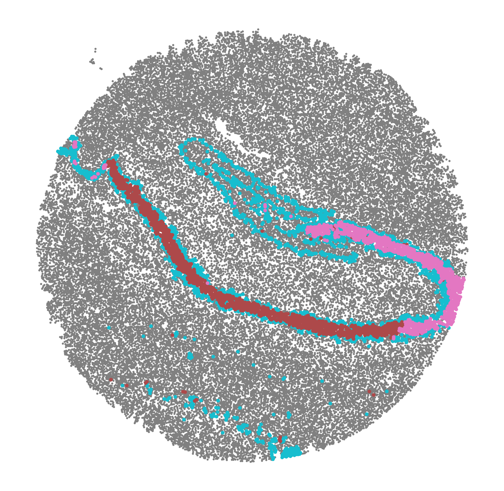

[1]:
import matplotlib.pyplot as plt
from spider import SPIDER
op = SPIDER()
import anndata
import scanpy as sc
import squidpy as sq
import pandas as pd
import numpy as np
# use cpus only
import os
os.environ['CUDA_VISIBLE_DEVICES'] = '-1'
TF_ENABLE_ONEDNN_OPTS = 0
2023-09-22 14:25:00.493303: I tensorflow/core/util/port.cc:110] oneDNN custom operations are on. You may see slightly different numerical results due to floating-point round-off errors from different computation orders. To turn them off, set the environment variable `TF_ENABLE_ONEDNN_OPTS=0`.
2023-09-22 14:25:00.495859: I tensorflow/tsl/cuda/cudart_stub.cc:28] Could not find cuda drivers on your machine, GPU will not be used.
2023-09-22 14:25:00.547233: I tensorflow/tsl/cuda/cudart_stub.cc:28] Could not find cuda drivers on your machine, GPU will not be used.
2023-09-22 14:25:00.548246: I tensorflow/core/platform/cpu_feature_guard.cc:182] This TensorFlow binary is optimized to use available CPU instructions in performance-critical operations.
To enable the following instructions: AVX2 AVX512F AVX512_VNNI FMA, in other operations, rebuild TensorFlow with the appropriate compiler flags.
2023-09-22 14:25:01.780413: W tensorflow/compiler/tf2tensorrt/utils/py_utils.cc:38] TF-TRT Warning: Could not find TensorRT
[2]:
sample_name = 'mousebrain'
ds = 'slide-seq-v2'
out_f = f'../input_datasets/{ds}/{sample_name}/'
adata = anndata.read_h5ad(f'{out_f}/adata.h5ad')
out_f = f'../datasets/{ds}/{sample_name}/'
[3]:
adata
[3]:
AnnData object with n_obs × n_vars = 41786 × 4000
obs: 'barcode', 'x', 'y', 'n_genes_by_counts', 'log1p_n_genes_by_counts', 'total_counts', 'log1p_total_counts', 'pct_counts_in_top_50_genes', 'pct_counts_in_top_100_genes', 'pct_counts_in_top_200_genes', 'pct_counts_in_top_500_genes', 'total_counts_MT', 'log1p_total_counts_MT', 'pct_counts_MT', 'n_counts', 'leiden', 'cluster'
var: 'MT', 'n_cells_by_counts', 'mean_counts', 'log1p_mean_counts', 'pct_dropout_by_counts', 'total_counts', 'log1p_total_counts', 'n_cells', 'highly_variable', 'highly_variable_rank', 'means', 'variances', 'variances_norm'
uns: 'cluster_colors', 'cluster_key', 'coord_type', 'gearyC', 'hvg', 'is_human', 'leiden', 'leiden_colors', 'neighbors', 'pca', 'spatial_neighbors', 'umap'
obsm: 'X_pca', 'X_umap', 'deconvolution_results', 'spatial'
varm: 'PCs'
obsp: 'connectivities', 'distances', 'spatial_connectivities', 'spatial_distances'
[4]:
adata.obsm['deconvolution_results']
[4]:
| Interneurons | Subiculum_Entorhinal_cl2 | Subiculum_Entorhinal_cl3 | DentatePyramids | CA1_CA2_CA3_Subiculum | Mural | Astrocytes | Oligodendrocytes | Polydendrocytes | Microglia | Ependymal | Endothelial_Tip | Neurogenesis | Endothelial_Stalk | barcode | max_cell_type | maxval | thresh_ct | |
|---|---|---|---|---|---|---|---|---|---|---|---|---|---|---|---|---|---|---|
| AACGTCATAATCGT | 0.113249 | 0.203010 | 0.086060 | 0.247319 | 0.153769 | 0.002455 | 0.072134 | 0.022327 | 0.008712 | 0.065562 | 0.003853 | 0.000000 | 0.000000 | 0.021550 | AACGTCATAATCGT | 4 | 0.247319 | 0.0 |
| TACTTTAGCGCAGT | 0.055718 | 0.077973 | 0.048517 | 0.187755 | 0.195889 | 0.040198 | 0.126317 | 0.071605 | 0.052353 | 0.013668 | 0.016075 | 0.044060 | 0.012159 | 0.057714 | TACTTTAGCGCAGT | 5 | 0.195889 | 0.0 |
| CATGCCTGGGTTCG | 0.108751 | 0.228845 | 0.109581 | 0.246070 | 0.115723 | 0.006306 | 0.071186 | 0.015768 | 0.000000 | 0.059735 | 0.000000 | 0.013702 | 0.000000 | 0.024332 | CATGCCTGGGTTCG | 4 | 0.246070 | 0.0 |
| TCGATATGGCACAA | 0.108163 | 0.029694 | 0.112905 | 0.172960 | 0.122573 | 0.014295 | 0.065901 | 0.031834 | 0.096153 | 0.034155 | 0.094124 | 0.065322 | 0.011114 | 0.040808 | TCGATATGGCACAA | 4 | 0.172960 | 0.0 |
| TTATCTGACGAAGC | 0.065790 | 0.236463 | 0.012458 | 0.233441 | 0.145091 | 0.014810 | 0.097935 | 0.052590 | 0.023642 | 0.008578 | 0.014275 | 0.058715 | 0.000000 | 0.036213 | TTATCTGACGAAGC | 2 | 0.236463 | 0.0 |
| ... | ... | ... | ... | ... | ... | ... | ... | ... | ... | ... | ... | ... | ... | ... | ... | ... | ... | ... |
| CACCCGATGACTCC | 0.189667 | 0.000000 | 0.000000 | 0.037157 | 0.007935 | 0.000000 | 0.000000 | 0.246184 | 0.392414 | 0.094163 | 0.000000 | 0.000000 | 0.016853 | 0.015627 | CACCCGATGACTCC | 9 | 0.392414 | 0.0 |
| CTTGATTAGGCAGG | 0.375533 | 0.123520 | 0.000000 | 0.036172 | 0.003471 | 0.000000 | 0.033918 | 0.006818 | 0.024570 | 0.308541 | 0.000000 | 0.078775 | 0.008685 | 0.000000 | CTTGATTAGGCAGG | 1 | 0.375533 | 0.0 |
| GAGTTCCTAAGCGG | 0.063493 | 0.050532 | 0.135440 | 0.349993 | 0.257504 | 0.000000 | 0.116491 | 0.000000 | 0.019085 | 0.000000 | 0.000000 | 0.000000 | 0.007462 | 0.000000 | GAGTTCCTAAGCGG | 4 | 0.349993 | 0.0 |
| GCGCTCAGTGCTCT | 0.313457 | 0.000000 | 0.000000 | 0.324040 | 0.061320 | 0.032552 | 0.000000 | 0.000000 | 0.086062 | 0.000000 | 0.000000 | 0.000000 | 0.000000 | 0.182568 | GCGCTCAGTGCTCT | 4 | 0.324040 | 0.0 |
| GAGATAACAGTTCC | 0.100265 | 0.000000 | 0.000000 | 0.162665 | 0.094934 | 0.006698 | 0.244409 | 0.130942 | 0.000000 | 0.004975 | 0.000000 | 0.121870 | 0.001284 | 0.131958 | GAGATAACAGTTCC | 7 | 0.244409 | 0.0 |
41786 rows × 18 columns
running results
[ ]:
# R_path =
# no_spatalk = False
# if len(adata) > 10000:
# no_spatalk=True
# idata = op.prep(adata, out_f, R_path, cluster_key=adata.uns['cluster_key'], is_human=adata.uns['is_human'], coord_type=adata.uns['coord_type'], no_spatalk=no_spatalk)
# idata, meta_idata = op.find_svi(idata, out_f, R_path, alpha=0.3)
# idata.write_h5ad(f'{out_f}/idata.h5ad')
or read results
[3]:
idata = anndata.read_h5ad(f'{out_f}/idata.h5ad')
metrics
[4]:
svi_df, svi_df_strict = op.svi.combine_SVI(idata,threshold=0.01)
op.svi.eva_SVI(idata, svi_df_strict)
plt.savefig(f'../figures/{ds}_{sample_name}_metric.png', dpi=100,bbox_inches='tight')
Using the results from SVI identification methods: ['SOMDE' 'SpatialDE' 'SPARKX' 'nnSVG' 'scGCO' 'gearyC' 'moranI']
188/188 SVIs identified (threshold=0.01).
evaluating with ['moranI' 'gearyC' 'SOMDE' 'nnSVG']
[5]:
op.vis.pattern_LRI(idata,show_SVI=1, spot_size=1)
plt.tight_layout()

[6]:
op.svi.eva_pattern(idata)
plt.xlabel('SPIDER SVI patterns')
plt.title('SPIDER SVI pattern evaluation', y=1.08)
plt.ylabel('LRI-pattern correlations')
plt.rcParams['font.size'] = 13
p-value annotation legend:
ns: p <= 1.00e+00
*: 1.00e-02 < p <= 5.00e-02
**: 1.00e-03 < p <= 1.00e-02
***: 1.00e-04 < p <= 1.00e-03
****: p <= 1.00e-04
9_non-member vs. 9_member: Mann-Whitney-Wilcoxon test smaller with Benjamini-Hochberg correction, P_val:1.410e-08 U_stat=8.600e+01
10_non-member vs. 10_member: Mann-Whitney-Wilcoxon test smaller with Benjamini-Hochberg correction, P_val:8.485e-13 U_stat=5.600e+01
11_non-member vs. 11_member: Mann-Whitney-Wilcoxon test smaller with Benjamini-Hochberg correction, P_val:1.200e-06 U_stat=2.400e+01
8_non-member vs. 8_member: Mann-Whitney-Wilcoxon test smaller with Benjamini-Hochberg correction, P_val:3.511e-17 U_stat=2.530e+02
1_non-member vs. 1_member: Mann-Whitney-Wilcoxon test smaller with Benjamini-Hochberg correction, P_val:5.319e-03 U_stat=0.000e+00
0_non-member vs. 0_member: Mann-Whitney-Wilcoxon test smaller with Benjamini-Hochberg correction, P_val:2.161e-09 U_stat=1.100e+02
2_non-member vs. 2_member: Mann-Whitney-Wilcoxon test smaller with Benjamini-Hochberg correction, P_val:5.319e-03 U_stat=0.000e+00
3_non-member vs. 3_member: Mann-Whitney-Wilcoxon test smaller with Benjamini-Hochberg correction, P_val:5.365e-06 U_stat=3.500e+01
4_non-member vs. 4_member: Mann-Whitney-Wilcoxon test smaller with Benjamini-Hochberg correction, P_val:5.689e-05 U_stat=0.000e+00
5_non-member vs. 5_member: Mann-Whitney-Wilcoxon test smaller with Benjamini-Hochberg correction, P_val:3.818e-15 U_stat=1.390e+02
6_non-member vs. 6_member: Mann-Whitney-Wilcoxon test smaller with Benjamini-Hochberg correction, P_val:1.305e-16 U_stat=3.000e+01
7_non-member vs. 7_member: Mann-Whitney-Wilcoxon test smaller with Benjamini-Hochberg correction, P_val:3.054e-20 U_stat=8.100e+01
[8]:
merged_df_edge, arr = op.er.pattern_enrichment_edge(idata,is_human=adata.uns['is_human'])
merged_df_node, arr = op.er.pattern_enrichment_node(idata,is_human=adata.uns['is_human'])
op.vis.enrichment(merged_df_node,x_key='label', cutoff=0.05, top_term=20,size=15)
merged_df_edge = merged_df_edge[~merged_df_edge['Term'].str.contains('cancer|Melanoma')]
try:
plt.rcParams['font.size'] = 7
op.vis.enrichment(merged_df_edge,x_key='label', cutoff=0.05, top_term=20, size=2, figsize=(2, 4))
except Exception as e:
print(e)
Using mouse LR pair dataset.
No objects to concatenate
No objects to concatenate
No objects to concatenate


[9]:
idata = idata[:, idata.var['is_svi']==1]
[10]:
adata, adata_lri, adata_pattern = op.cell_transform(idata, adata, label=adata.uns['cluster_key'])
adata_lri.obsm['spatial'] = adata[adata_lri.obs_names].obsm['spatial']
adata_pattern.obsm['spatial'] = adata[adata_lri.obs_names].obsm['spatial']
Added key cell_pattern in idata.uns
Added key cell_score in idata.uns
Added key interaction_pattern, interaction_score in adata.obsm
WARNING: Default of the method has been changed to 't-test' from 't-test_overestim_var'
WARNING: Default of the method has been changed to 't-test' from 't-test_overestim_var'
Added key rank_interaction_score_groups, rank_interaction_pattern_groups in adata.uns
[11]:
with plt.rc_context():
sc.pl.rank_genes_groups_dotplot(adata_lri, standard_scale='var', show=False)
plt.savefig(f'../figures/{ds}_{sample_name}_label_SVI.png', bbox_inches="tight")
WARNING: dendrogram data not found (using key=dendrogram_cluster). Running `sc.tl.dendrogram` with default parameters. For fine tuning it is recommended to run `sc.tl.dendrogram` independently.
WARNING: You’re trying to run this on 188 dimensions of `.X`, if you really want this, set `use_rep='X'`.
Falling back to preprocessing with `sc.pp.pca` and default params.

[12]:
with plt.rc_context():
sc.set_figure_params(figsize=(3, 3), fontsize=10)
sc.pl.rank_genes_groups_dotplot(adata_lri, standard_scale='var', show=False, cmap='plasma', n_genes=1)
plt.savefig(f'../figures/{ds}_{sample_name}_label_SVI1.png', bbox_inches="tight")

[13]:
with plt.rc_context():
sc.set_figure_params(figsize=(3, 3), fontsize=10)
sc.pl.rank_genes_groups_dotplot(adata_pattern, standard_scale='var', n_genes=1, show=False, cmap='plasma')
plt.savefig(f'../figures/{ds}_{sample_name}_label_pattern.png', bbox_inches="tight")
WARNING: dendrogram data not found (using key=dendrogram_cluster). Running `sc.tl.dendrogram` with default parameters. For fine tuning it is recommended to run `sc.tl.dendrogram` independently.

[14]:
sq.gr.spatial_neighbors(adata, key_added='spatial')
sq.gr.spatial_autocorr(
adata,
genes=adata.var_names,
mode="moran",
n_perms=1000,
n_jobs=1,
)
100%|██████████| 1000/1000 [24:12<00:00, 1.45s/]
[15]:
plt.rcParams['font.size'] = 13
merged_df,lri_pw_list,gene_lr_list,gene_pw_list = op.vis.svg_svi_relation(adata, idata, title='mouse brain', is_human=adata.uns['is_human'], top=50)
plt.savefig(f'../figures/{ds}_{sample_name}_relation.png', dpi=100,bbox_inches='tight')
Mouse KEGG_2019_Mouse
Using mouse LR pair dataset.
50
0.29785379706656556 0.1348194701533406 0.05903925181915221

[16]:
region = adata.obsm['deconvolution_results'].loc[adata_pattern.obs_names]
from scipy import stats
pds = []
for i in adata_pattern.var_names:
pds.append(region.corrwith(adata_pattern.to_df()[i].astype('float'), method=stats.pointbiserialr)[:1])
pds_df = pd.concat(pds)
pds_df.index = adata_pattern.var_names
useful_df = []
for cluster_i in adata.obs['cluster'].unique():
df_sub = pds_df[pds_df[cluster_i]>0.3][cluster_i].sort_values(ascending=False)
if len(df_sub) > 0:
useful_df.append(df_sub)
[17]:
patterns = []
cluster = []
cluster_id = []
corrs = []
cluster_id_map = {
'DentatePyramids': 'Dentate Pyramids',
'Endothelial_Tip': 'Endothelial Tip',
'Oligodendrocytes': 'Oligodendrocytes',
'Astrocytes': 'Astrocytes',
'Ependymal': 'Ependymal',
'CA1_CA2_CA3_Subiculum': "CA1/CA2/CA3 Subiculum",
'Subiculum_Entorhinal_cl2': "Subiculum Entorhinal cl2"
}
for x in useful_df:
patterns.append(int(x.idxmax()))
corrs.append(x.max())
cluster_id.append(x.name)
cluster.append(cluster_id_map[x.name])
patterns = np.array(patterns)[np.argsort(corrs)[::-1]]
cluster_id = np.array(cluster_id)[np.argsort(corrs)[::-1]]
cluster = np.array(cluster)[np.argsort(corrs)[::-1]]
corrs = np.array(corrs)[np.argsort(corrs)[::-1]]
[18]:
useful_df = []
adata_lri.obsm['spatial'] = adata[adata_lri.obs_names].obsm['spatial']
adata_pattern.obsm['spatial'] = adata[adata_lri.obs_names].obsm['spatial']
plt.figure(figsize=(7*4, 5*len(patterns)))
base = 1
for i in range(len(patterns)):
corr = corrs[i]
cluster_name = cluster[i]
cluster_i = cluster_id[i]
plt.subplot(len(patterns), 6, base)
plt.scatter(adata.obsm['spatial'][:,0],adata.obsm['spatial'][:,1], c=adata.obsm['deconvolution_results'][cluster_i], s=3, cmap='plasma', edgecolors='none')
# plt.scatter(adata[adata.obs['cluster']==cluster_id].obsm['spatial'][:,0],adata[adata.obs['cluster']==cluster_id].obsm['spatial'][:,1], c=adata[adata.obs['cluster']==cluster_name].obs['cluster']==cluster_name, s=5, cmap='plasma', vmin=0, edgecolors='none')
plt.axis('equal')
plt.axis('off')
plt.title(f'{cluster_name}\n({sample_name})')
base += 1
plt.subplot(len(patterns), 6, base)
im=plt.scatter(adata_pattern.obsm['spatial'][:,0], adata_pattern.obsm['spatial'][:,1], c=adata_pattern.to_df()[str(patterns[i])], s=3, cmap='plasma', edgecolors='none')
plt.colorbar(im,fraction=0.046, pad=0.04)
plt.axis('equal')
plt.axis('off')
plt.title(f'Pattern {patterns[i]} - {np.sum(idata.var.label == patterns[i])} SVIs\ncorr={"%.3f" % corr}')
base += 1
svis = idata.var[idata.var.label == patterns[i]].sort_values(f'pattern_correlation_{patterns[i]}', ascending=False)
svi_to_plot = svis.index.to_numpy()[:4]
print(svi_to_plot)
memberships = svis[f'pattern_correlation_{patterns[i]}'].to_numpy()[:4]
for j in range(4):
if j < len(svi_to_plot):
plt.subplot(len(patterns), 6, base)
im=plt.scatter(adata_lri.obsm['spatial'][:,0], adata_lri.obsm['spatial'][:,1], c=adata_lri.to_df()[svi_to_plot[j]], s=3, cmap='plasma', edgecolors='none',linewidths=0)
plt.axis('equal')
plt.axis('off')
plt.colorbar(im,fraction=0.046, pad=0.04)
plt.title(f'{svi_to_plot[j]}\n corr={"%.3f" % memberships[j]}')
base += 1
plt.savefig(f'../figures/{ds}_{sample_name}_decon_pattern_full.png', dpi=100,bbox_inches='tight')
['Ntf3_Ntrk3' 'Bdnf_Ntrk3' 'Slit1_Robo2' 'Slit3_Robo2']
['Lama2_Itgb4' 'Lama5_Itgb4' 'Col9a3_Mag' 'Lama1_Itgb4']
['C1qa_Cd93' 'Il16_Grin2c' 'Cfh_Itgam' 'Icam1_Itgam']
['Col1a2_Cd93' 'Igf2_Igf1r' 'Fn1_Col13a1' 'Cdh1_Ptprm']
['Efna5_Epha4' 'Efna5_Epha3' 'Nxph1_Nrxn3' 'Vip_Ramp3']
['Tac2_Tacr1' 'Tac1_Tacr1' 'Nppa_Npr1' 'Slit2_Robo3']
['Ntf3_Ntrk3' 'Bdnf_Ntrk3' 'Slit1_Robo2' 'Slit3_Robo2']
[19]:
region = pd.get_dummies(idata.uns['cell_meta'].loc[adata.obs_names]['cluster']).loc[adata_pattern.obs_names]
from scipy import stats
pds = []
for i in adata_pattern.var_names:
pds.append(region.corrwith(adata_pattern.to_df()[i].astype('float'), method=stats.pointbiserialr)[:1])
pds_df = pd.concat(pds)
pds_df.index = adata_pattern.var_names
useful_df = []
for cluster_i in adata.obs['cluster'].unique():
df_sub = pds_df[pds_df[cluster_i]>0.3][cluster_i].sort_values(ascending=False)
if len(df_sub) > 0:
useful_df.append(df_sub)
[20]:
useful_df
[20]:
[10 0.302205
Name: DentatePyramids, dtype: float64,
7 0.450247
Name: Oligodendrocytes, dtype: float64,
0 0.327792
Name: Astrocytes, dtype: float64,
5 0.313545
Name: Ependymal, dtype: float64,
6 0.360728
2 0.301425
Name: Endothelial_Tip, dtype: float64]
[21]:
patterns = []
cluster = []
cluster_id = []
corrs = []
cluster_id_map = {
'DentatePyramids': 'Dentate Pyramids',
'Endothelial_Tip': 'Endothelial Tip',
'Oligodendrocytes': 'Oligodendrocytes',
'Astrocytes': 'Astrocytes',
'Ependymal': 'Ependymal'
}
for x in useful_df:
patterns.append(int(x.idxmax()))
corrs.append(x.max())
cluster_id.append(x.name)
cluster.append(cluster_id_map[x.name])
[22]:
useful_df = []
adata_lri.obsm['spatial'] = adata[adata_lri.obs_names].obsm['spatial']
adata_pattern.obsm['spatial'] = adata[adata_lri.obs_names].obsm['spatial']
plt.figure(figsize=(4*4, 3.1*len(patterns)))
plt.rcParams['font.size'] = 12
base = 1
for i in range(len(patterns)):
corr = corrs[i]
cluster_name = cluster[i]
cluster_i = cluster_id[i]
plt.subplot(len(patterns), 4, base)
to_plot = pd.DataFrame(adata.obsm['deconvolution_results'][cluster_i])
to_plot[['x','y']] = adata.obsm['spatial']
to_plot = to_plot.sort_values(cluster_i, ascending=True)
plt.scatter(to_plot['x'],to_plot['y'], c=to_plot[cluster_i], s=3, cmap='plasma', edgecolors='none')
# plt.scatter(adata.obsm['spatial'][:,0],adata.obsm['spatial'][:,1], c=adata.obsm['deconvolution_results'][cluster_i], s=3, cmap='plasma', edgecolors='none')
# plt.scatter(adata.obsm['spatial'][:,0],adata.obsm['spatial'][:,1], c=adata.obs['cluster']==cluster_i, s=3, cmap='plasma', edgecolors='none')
# plt.scatter(adata[adata.obs['cluster']==cluster_id].obsm['spatial'][:,0],adata[adata.obs['cluster']==cluster_id].obsm['spatial'][:,1], c=adata[adata.obs['cluster']==cluster_name].obs['cluster']==cluster_name, s=5, cmap='plasma', vmin=0, edgecolors='none')
plt.axis('equal')
plt.axis('off')
if cluster_name.__contains__(' '):
plt.title(cluster_name.replace(" ", "\n", 1), y=0.94, fontsize=17)
else:
plt.title(cluster_name, y=0.98, fontsize=17)
# plt.title(f'{cluster_name}\n({sample_name})', y=0.94, fontsize=17)
base += 1
plt.subplot(len(patterns), 4, base)
im=plt.scatter(adata_pattern.obsm['spatial'][:,0], adata_pattern.obsm['spatial'][:,1], c=adata_pattern.to_df()[str(patterns[i])], s=3, cmap='plasma', edgecolors='none')
plt.colorbar(im,fraction=0.046, pad=0.04)
plt.axis('equal')
plt.axis('off')
plt.title(f'Pattern {patterns[i]} - {np.sum(idata.var.label == patterns[i])} SVIs\ncorr={"%.3f" % corr}', y=0.92, fontsize=17)
base += 1
svis = idata.var[idata.var.label == patterns[i]].sort_values(f'pattern_correlation_{patterns[i]}', ascending=False)
svi_to_plot = svis.index.to_numpy()[:2]
print(svi_to_plot)
memberships = svis[f'pattern_correlation_{patterns[i]}'].to_numpy()[:2]
for j in range(2):
plt.subplot(len(patterns), 4, base)
im=plt.scatter(adata_lri.obsm['spatial'][:,0], adata_lri.obsm['spatial'][:,1], c=adata_lri.to_df()[svi_to_plot[j]], s=3, cmap='plasma', edgecolors='none',linewidths=0)
plt.axis('equal')
plt.axis('off')
plt.colorbar(im,fraction=0.046, pad=0.04)
plt.title(f'{svi_to_plot[j]}\n corr={"%.3f" % memberships[j]}', y=0.92, fontsize=17)
base += 1
plt.subplots_adjust(left=0.34,
wspace=0.15)
# plt.savefig(f'../figures/{ds}_{sample_name}_cluster_pattern.png', dpi=100,bbox_inches='tight')
['Ntf3_Ntrk3' 'Bdnf_Ntrk3']
['Lama2_Itgb4' 'Lama5_Itgb4']
['C1qa_Cd93' 'Il16_Grin2c']
['Tac2_Tacr1' 'Tac1_Tacr1']
['Col1a2_Cd93' 'Igf2_Igf1r']

[23]:
cluster_name.replace(" ", "\n", 1)
[23]:
'Endothelial\nTip'
[24]:
group = idata.var[idata.var['is_svi']==1]
group['g'] = group.index
group['membership'] = 1
custom, background = op.er.pathway_prep(idata,is_human=False)
merged_df_edge, arr = op.er.enrichment(custom, background, group, groupby='label')
Using mouse LR pair dataset.
[25]:
merged_df_edge[merged_df_edge.group=='11']
[25]:
| Gene_set | Term | Overlap | P-value | Adjusted P-value | Odds Ratio | Genes | group | ordered_group | |
|---|---|---|---|---|---|---|---|---|---|
| 0 | gs_ind_0 | AMPK signaling pathway | 1/1 | 0.012048 | 0.026287 | 165.000000 | Igf1_Igf1r | 11 | 11 |
| 1 | gs_ind_0 | Breast cancer | 1/1 | 0.012048 | 0.026287 | 165.000000 | Igf1_Igf1r | 11 | 11 |
| 2 | gs_ind_0 | EGFR tyrosine kinase inhibitor resistance | 1/3 | 0.036145 | 0.043373 | 69.000000 | Igf1_Igf1r | 11 | 11 |
| 3 | gs_ind_0 | Endocrine resistance | 1/2 | 0.024096 | 0.038554 | 97.800000 | Igf1_Igf1r | 11 | 11 |
| 4 | gs_ind_0 | Focal adhesion | 1/10 | 0.120482 | 0.125720 | 21.000000 | Igf1_Igf1r | 11 | 11 |
| 5 | gs_ind_0 | FoxO signaling pathway | 1/2 | 0.024096 | 0.038554 | 97.800000 | Igf1_Igf1r | 11 | 11 |
| 6 | gs_ind_0 | Glioma | 1/1 | 0.012048 | 0.026287 | 165.000000 | Igf1_Igf1r | 11 | 11 |
| 7 | gs_ind_0 | HIF-1 signaling pathway | 1/1 | 0.012048 | 0.026287 | 165.000000 | Igf1_Igf1r | 11 | 11 |
| 8 | gs_ind_0 | Long-term depression | 1/1 | 0.012048 | 0.026287 | 165.000000 | Igf1_Igf1r | 11 | 11 |
| 9 | gs_ind_0 | Longevity regulating pathway | 1/1 | 0.012048 | 0.026287 | 165.000000 | Igf1_Igf1r | 11 | 11 |
| 10 | gs_ind_0 | Longevity regulating pathway - multiple species | 1/1 | 0.012048 | 0.026287 | 165.000000 | Igf1_Igf1r | 11 | 11 |
| 11 | gs_ind_0 | MAPK signaling pathway | 1/6 | 0.072289 | 0.078861 | 35.769231 | Igf1_Igf1r | 11 | 11 |
| 12 | gs_ind_0 | Melanoma | 1/2 | 0.024096 | 0.038554 | 97.800000 | Igf1_Igf1r | 11 | 11 |
| 13 | gs_ind_0 | Oocyte meiosis | 1/1 | 0.012048 | 0.026287 | 165.000000 | Igf1_Igf1r | 11 | 11 |
| 14 | gs_ind_0 | Ovarian steroidogenesis | 1/1 | 0.012048 | 0.026287 | 165.000000 | Igf1_Igf1r | 11 | 11 |
| 15 | gs_ind_0 | PI3K-Akt signaling pathway | 1/11 | 0.132530 | 0.132530 | 18.913043 | Igf1_Igf1r | 11 | 11 |
| 16 | gs_ind_0 | Pathways in cancer | 1/3 | 0.036145 | 0.043373 | 69.000000 | Igf1_Igf1r | 11 | 11 |
| 17 | gs_ind_0 | Progesterone-mediated oocyte maturation | 1/1 | 0.012048 | 0.026287 | 165.000000 | Igf1_Igf1r | 11 | 11 |
| 18 | gs_ind_0 | Prostate cancer | 1/2 | 0.024096 | 0.038554 | 97.800000 | Igf1_Igf1r | 11 | 11 |
| 19 | gs_ind_0 | Proteoglycans in cancer | 1/3 | 0.036145 | 0.043373 | 69.000000 | Igf1_Igf1r | 11 | 11 |
| 20 | gs_ind_0 | Rap1 signaling pathway | 1/3 | 0.036145 | 0.043373 | 69.000000 | Igf1_Igf1r | 11 | 11 |
| 21 | gs_ind_0 | Ras signaling pathway | 1/3 | 0.036145 | 0.043373 | 69.000000 | Igf1_Igf1r | 11 | 11 |
| 22 | gs_ind_0 | Signaling pathways regulating pluripotency of ... | 1/4 | 0.048193 | 0.055077 | 53.000000 | Igf1_Igf1r | 11 | 11 |
| 23 | gs_ind_0 | mTOR signaling pathway | 1/1 | 0.012048 | 0.026287 | 165.000000 | Igf1_Igf1r | 11 | 11 |
[26]:
enrich_df_gene_reactome, arr = op.er.enrichment_interacrtion_gene_df(group, groupby='label', is_human=False, custom_pathwaydb=['Reactome_2022'])
enrich_df_gene_reactome['ratio'] = np.array([int(x.split('/')[0])/int(x.split('/')[1]) for x in enrich_df_gene_reactome.Overlap])
enrich_df_gene_reactome = enrich_df_gene_reactome[enrich_df_gene_reactome.label.isin(['20','7','0','9','6'])]
enrich_df_gene_reactome['pattern_rep'] = pd.Categorical(enrich_df_gene_reactome.label).rename_categories({
'20': 'Dentate Pyramids (10)',
'7': 'Oligodendrocytes (7)',
'0': 'Astrocytes (0)',
'9': 'Ependymal (9)',
'6': 'Endothelial Tip (6)',
})
[28]:
enrich_df_gene_reactome['Term_old'] = enrich_df_gene_reactome['Term']
enrich_df_gene_reactome['Term'] = [s.rsplit(' ', 1)[0] for s in enrich_df_gene_reactome['Term_old']]
enrich_df_gene_reactome['Term'] = enrich_df_gene_reactome['Term'].replace('p130Cas Linkage To MAPK Signaling For Integrins', 'MAPK Signaling For Integrins (1)')
enrich_df_gene_reactome['Term'] = enrich_df_gene_reactome['Term'].replace('GRB2:SOS Provides Linkage To MAPK Signaling For Integrins', 'MAPK signaling For integrins (2)')
enrich_df_gene_reactome['Term'] = enrich_df_gene_reactome['Term'].replace('Regulation Of Commissural Axon Pathfinding By SLIT And ROBO', 'Regulation Of Commissural Axon Pathfinding')
enrich_df_gene_reactome = enrich_df_gene_reactome[enrich_df_gene_reactome['Adjusted P-value']<0.05]
op.vis.enrichment(enrich_df_gene_reactome[(enrich_df_gene_reactome.label.isin(np.array(patterns, dtype=str))) & (enrich_df_gene_reactome['ratio'] > 0.12)], x_key='pattern_rep', size=5, figsize=(3,7), top_term=10, save=f'../figures/{ds}_{sample_name}_reactome_small.png')
op.vis.enrichment(enrich_df_gene_reactome[(enrich_df_gene_reactome.label.isin(np.array(patterns, dtype=str))) & (enrich_df_gene_reactome['ratio'] > 0.12)], x_key='pattern_rep', size=5, figsize=(3,10), top_term=10, save=f'../figures/{ds}_{sample_name}_reactome_large.png')
op.vis.enrichment(enrich_df_gene_reactome[(enrich_df_gene_reactome.label.isin(np.array(patterns, dtype=str))) & (enrich_df_gene_reactome['ratio'] > 0.12)], x_key='pattern_rep', size=5, figsize=(3,7), top_term=10)

[29]:
sc.pp.neighbors(adata_pattern, n_neighbors=10, n_pcs=40, use_rep='X')
[30]:
sc.tl.paga(adata_pattern)
sc.pl.paga(adata_pattern, plot=False) # remove `plot=False` if you want to see the coarse-grained graph
sc.tl.umap(adata_pattern, init_pos='paga')
sc.tl.umap(adata_pattern)
[31]:
sc.pl.umap(adata_pattern, color=['0'])

[32]:
sc.tl.leiden(adata_pattern,resolution=0.5, seed=0)
# sc.pl.umap(adata_pattern, color=['leiden'])
main_clusters = adata_pattern.obs['leiden'].value_counts().index[adata_pattern.obs['leiden'].value_counts() > 100].to_numpy()
adata_pattern_subset = adata_pattern[adata_pattern.obs['leiden'].isin(main_clusters)]
sc.pl.spatial(adata_pattern_subset, color=['leiden'], spot_size=20)

[33]:
pallete = {'0': '#1f77b4',
'1': '#ff7f0e',
'2': '#279e68',
'3': '#d62728',
'4': '#aa40fc',
'5': '#8c564b',
'6': '#e377c2',
'7': '#b5bd61',
'8': '#17becf',
'9': '#aec7e8',
'10': '#ffbb78',
'11': '#98df8a',
'12': '#ff9896',
'18': '#c5b0d5',
'14': '#c49c94',
'15': '#f7b6d2',
'16': '#dbdb8d',
'17': '#9edae5',
'13': '#ad494a',
'19': '#8c6d31'}
[34]:
to_plot = pd.DataFrame(adata_pattern_subset.obs['leiden'])
to_plot[['x','y']] = adata_pattern_subset.obsm['spatial']
import seaborn as sns
# custom_palette = sns.color_palette("husl",to_plot.leiden.nunique())
sns.scatterplot(data=to_plot, x='x', y='y', hue='leiden', palette=pallete, s=1.5, linewidth=0, legend=True)
# move legend to right
plt.legend(bbox_to_anchor=(0.85, 0.95), loc=2, borderaxespad=0., ncols=2, frameon=False, fontsize=16, markerscale=1.5)
plt.axis('equal')
plt.axis('off')
[34]:
(559.6379999999999, 5928.122, 520.558, 5835.802)

[35]:
dfs = []
for i in adata_pattern_subset.obs['leiden'].unique():
dfs.append(adata_pattern_subset.obs['cluster'].loc[(adata_pattern_subset.obs[adata_pattern_subset.obs['leiden']==i]).index].value_counts())
dfs_merged = pd.concat(dfs, axis=1)
dfs_merged.columns=adata_pattern_subset.obs['leiden'].unique()
dfs_merged = (dfs_merged / dfs_merged.sum()).T.reset_index().rename(columns={'index':'interface cluster'}).sort_values('Astrocytes')
[36]:
# get largest and second largest in each row of df
subset=dfs_merged[(dfs_merged.set_index('interface cluster').apply(lambda row: row.nlargest(2).values[-1],axis=1) >= 0.2).to_numpy()]
subset
[36]:
| interface cluster | Astrocytes | CA1_CA2_CA3_Subiculum | DentatePyramids | Endothelial_Stalk | Endothelial_Tip | Ependymal | Interneurons | Microglia | Mural | Neurogenesis | Oligodendrocytes | Polydendrocytes | Subiculum_Entorhinal_cl2 | Subiculum_Entorhinal_cl3 | |
|---|---|---|---|---|---|---|---|---|---|---|---|---|---|---|---|
| 14 | 14 | 0.017266 | 0.028777 | 0.044604 | 0.102158 | 0.474820 | 0.221583 | 0.011511 | 0.037410 | 0.043165 | 0.011511 | 0.000000 | 0.001439 | 0.000000 | 0.005755 |
| 12 | 12 | 0.020085 | 0.280127 | 0.294926 | 0.026427 | 0.026427 | 0.002114 | 0.047569 | 0.019027 | 0.013742 | 0.026427 | 0.000000 | 0.021142 | 0.175476 | 0.046512 |
| 15 | 11 | 0.038394 | 0.158813 | 0.111693 | 0.026178 | 0.024433 | 0.207679 | 0.212042 | 0.013962 | 0.026178 | 0.041885 | 0.021815 | 0.041012 | 0.008726 | 0.067190 |
| 7 | 3 | 0.046885 | 0.208012 | 0.162448 | 0.026634 | 0.007484 | 0.001981 | 0.134933 | 0.015628 | 0.010346 | 0.014308 | 0.004402 | 0.018710 | 0.236408 | 0.111820 |
| 11 | 6 | 0.088523 | 0.206424 | 0.233059 | 0.040345 | 0.017626 | 0.000392 | 0.150020 | 0.014101 | 0.022718 | 0.012926 | 0.028594 | 0.028594 | 0.109283 | 0.047395 |
| 18 | 17 | 0.212121 | 0.075758 | 0.030303 | 0.030303 | 0.030303 | 0.000000 | 0.030303 | 0.020202 | 0.035354 | 0.020202 | 0.383838 | 0.060606 | 0.025253 | 0.045455 |
[37]:
dfs_merged = dfs_merged[(dfs_merged.set_index('interface cluster').max(axis=1)>=0.3).to_numpy()]
[38]:
dfs_merged
[38]:
| interface cluster | Astrocytes | CA1_CA2_CA3_Subiculum | DentatePyramids | Endothelial_Stalk | Endothelial_Tip | Ependymal | Interneurons | Microglia | Mural | Neurogenesis | Oligodendrocytes | Polydendrocytes | Subiculum_Entorhinal_cl2 | Subiculum_Entorhinal_cl3 | |
|---|---|---|---|---|---|---|---|---|---|---|---|---|---|---|---|
| 1 | 8 | 0.016230 | 0.830836 | 0.083021 | 0.009988 | 0.004370 | 0.001873 | 0.029338 | 0.006242 | 0.003745 | 0.006242 | 0.001248 | 0.002497 | 0.003745 | 0.000624 |
| 14 | 14 | 0.017266 | 0.028777 | 0.044604 | 0.102158 | 0.474820 | 0.221583 | 0.011511 | 0.037410 | 0.043165 | 0.011511 | 0.000000 | 0.001439 | 0.000000 | 0.005755 |
| 9 | 9 | 0.017566 | 0.049561 | 0.831870 | 0.011920 | 0.008156 | 0.000627 | 0.013174 | 0.004391 | 0.005646 | 0.048306 | 0.001882 | 0.005019 | 0.000627 | 0.001255 |
| 3 | 5 | 0.090459 | 0.554308 | 0.154837 | 0.023110 | 0.013206 | 0.003632 | 0.063387 | 0.016177 | 0.016177 | 0.020139 | 0.009574 | 0.019478 | 0.008254 | 0.007263 |
| 6 | 4 | 0.107431 | 0.031106 | 0.020449 | 0.036002 | 0.015841 | 0.011809 | 0.022177 | 0.026210 | 0.019585 | 0.042627 | 0.569700 | 0.085541 | 0.004608 | 0.006912 |
| 10 | 13 | 0.128144 | 0.104192 | 0.051497 | 0.038323 | 0.013174 | 0.001198 | 0.108982 | 0.020359 | 0.022754 | 0.027545 | 0.311377 | 0.059880 | 0.019162 | 0.093413 |
| 18 | 17 | 0.212121 | 0.075758 | 0.030303 | 0.030303 | 0.030303 | 0.000000 | 0.030303 | 0.020202 | 0.035354 | 0.020202 | 0.383838 | 0.060606 | 0.025253 | 0.045455 |
| 5 | 0 | 0.395860 | 0.089918 | 0.127054 | 0.066056 | 0.026549 | 0.008375 | 0.064791 | 0.072377 | 0.033818 | 0.031606 | 0.018489 | 0.042826 | 0.012010 | 0.010272 |
[39]:
custom_palette = sns.color_palette("husl",adata_pattern_subset.obs['cluster'].nunique())
plt.rcParams['font.size'] = 11
g = dfs_merged.loc[[5, 3, 1, 14, 9, 6, 18, 10]].plot.barh(x='interface cluster',
stacked=True, legend=False, color=custom_palette, figsize=(5,2), width=0.9)
g.spines[['right', 'top']].set_visible(False)
plt.ylabel('Clusters from\nSVI patterns')
plt.title('Celltype composition in SVI pattern-based clusters')
plt.legend(bbox_to_anchor=(1.05, -0.1), ncols=2, fontsize=10, frameon=False)
labels = []
for j in dfs_merged.columns:
if j != 'interface cluster':
for i in dfs_merged.index:
label = j
labels.append(label)
for label, p in zip(labels, g.patches):
width, height = p.get_width(), p.get_height()
x, y = p.get_xy()
if width>=0.3:
# g.text(x, y+height/2,
g.text(x+width/2+0.02, y+height/2-0.01,
label, # '{:.0f} %'.format(height),
horizontalalignment='center',
verticalalignment='center',
# rotation=90,
)

[40]:
to_plot['leiden_oli'] = to_plot['leiden']
to_plot.loc[to_plot[~to_plot['leiden'].isin(['13', '17', '4'])].index, 'leiden_oli'] = np.nan
sns.scatterplot(data=to_plot, x='x', y='y', s=1, linewidth=0, legend=False, color='grey')
sns.scatterplot(data=to_plot, x='x', y='y', hue='leiden_oli', s=3, linewidth=0, legend=False, palette=pallete)
# move legend to right
plt.legend(bbox_to_anchor=(0.75, 1), loc=2, borderaxespad=0., ncols=1, frameon=False)
plt.axis('equal')
plt.axis('off')
No artists with labels found to put in legend. Note that artists whose label start with an underscore are ignored when legend() is called with no argument.
[40]:
(559.6379999999999, 5928.122, 520.558, 5835.802)

[41]:
adata_lri.obs['leiden'] = adata_pattern.obs['leiden']
adata_lri_sub = adata_lri[adata_lri.obs['leiden'].isin(['13', '17', '4'])]
sc.tl.rank_genes_groups(adata_lri_sub, groupby='leiden')
sc.set_figure_params(dpi=300, fontsize=10)
sc.pl.rank_genes_groups_dotplot(adata_lri_sub, standard_scale='var', n_genes=5, show=False, dendrogram=False, color_map='plasma')
WARNING: Default of the method has been changed to 't-test' from 't-test_overestim_var'
[41]:
{'mainplot_ax': <AxesSubplot: >,
'gene_group_ax': <AxesSubplot: >,
'size_legend_ax': <AxesSubplot: title={'center': 'Fraction of cells\nin group (%)'}>,
'color_legend_ax': <AxesSubplot: title={'center': 'Mean expression\nin group'}>}

[42]:
to_plot['leiden_ca'] = to_plot['leiden']
to_plot.loc[to_plot[~to_plot['leiden'].isin(['8', '5'])].index, 'leiden_ca'] = np.nan
sns.scatterplot(data=to_plot, x='x', y='y', s=1, linewidth=0, legend=False, color='grey')
sns.scatterplot(data=to_plot, x='x', y='y', hue='leiden_ca', s=3, linewidth=0, legend=False, palette=pallete)
# move legend to right
plt.legend(bbox_to_anchor=(0.75, 1), loc=2, borderaxespad=0., ncols=1, frameon=False)
plt.axis('equal')
plt.axis('off')
No artists with labels found to put in legend. Note that artists whose label start with an underscore are ignored when legend() is called with no argument.
[42]:
(559.6379999999999, 5928.122, 520.558, 5835.802)

[43]:
adata_lri.obs['leiden'] = adata_pattern.obs['leiden']
adata_lri_sub = adata_lri[adata_lri.obs['leiden'].isin(['8', '5'])]
sc.tl.rank_genes_groups(adata_lri_sub, groupby='leiden')
sc.set_figure_params(dpi=300, fontsize=10)
sc.pl.rank_genes_groups_dotplot(adata_lri_sub, standard_scale='var', n_genes=5, show=False, dendrogram=False, color_map='plasma')
WARNING: Default of the method has been changed to 't-test' from 't-test_overestim_var'
[43]:
{'mainplot_ax': <AxesSubplot: >,
'gene_group_ax': <AxesSubplot: >,
'size_legend_ax': <AxesSubplot: title={'center': 'Fraction of cells\nin group (%)'}>,
'color_legend_ax': <AxesSubplot: title={'center': 'Mean expression\nin group'}>}